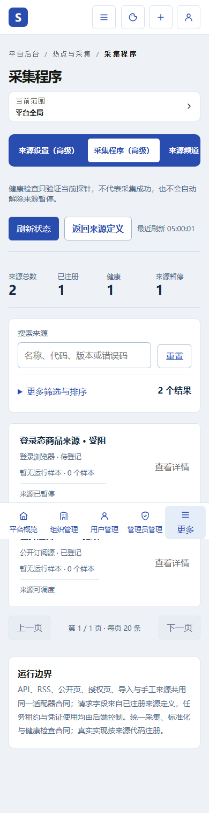
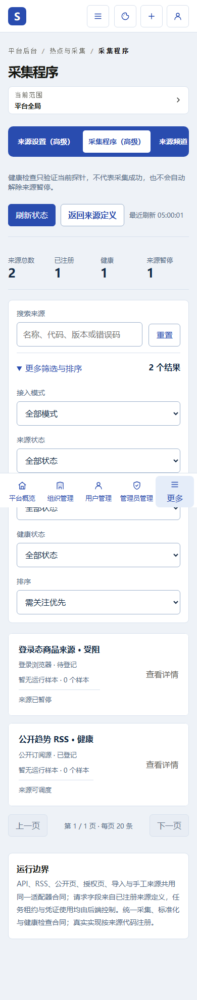
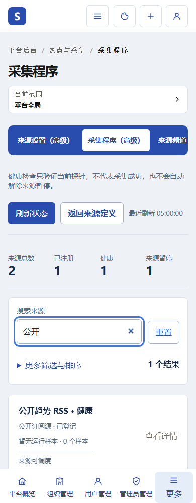
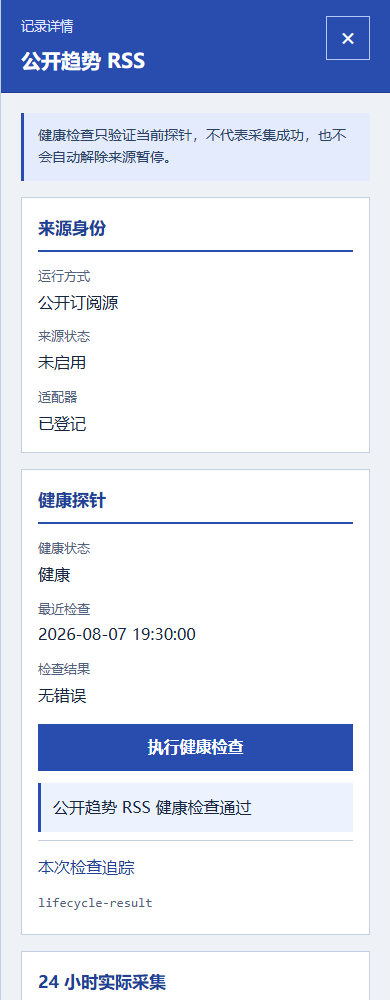
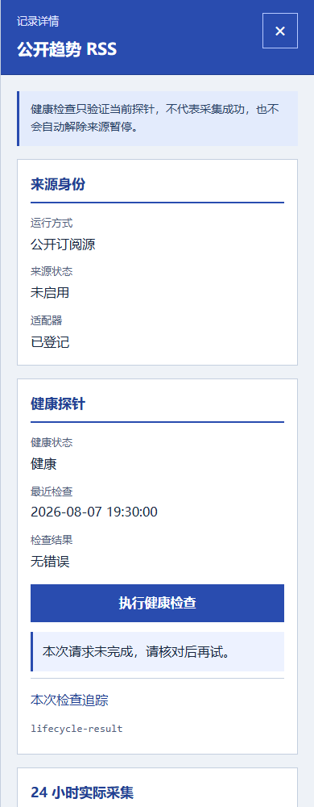
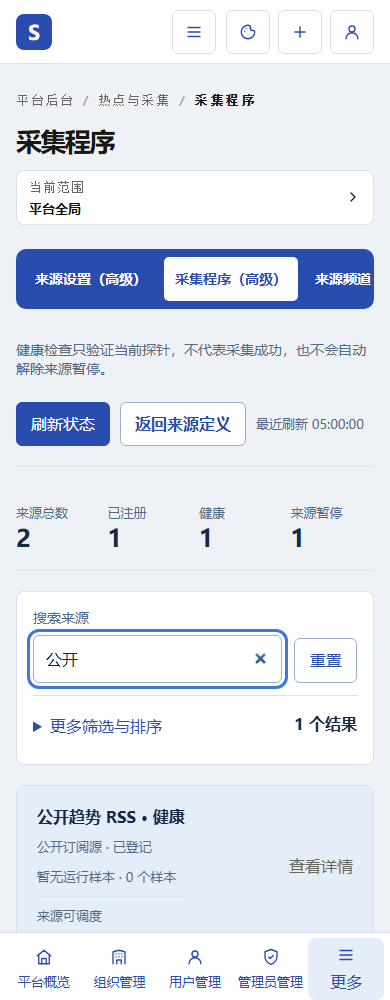
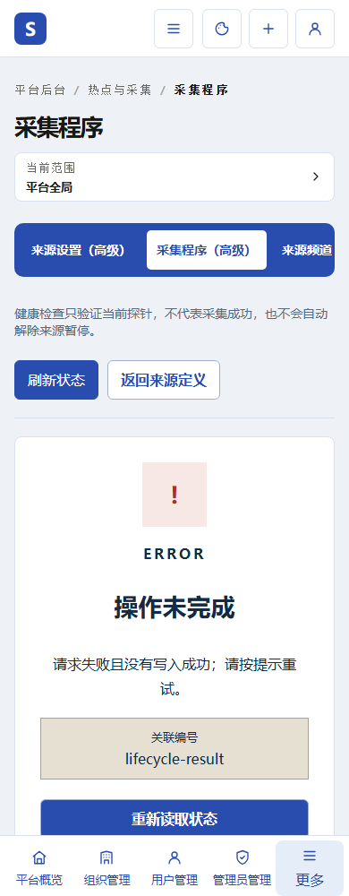
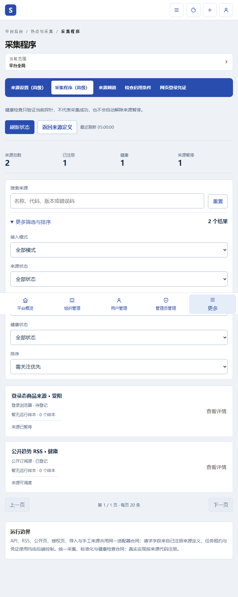
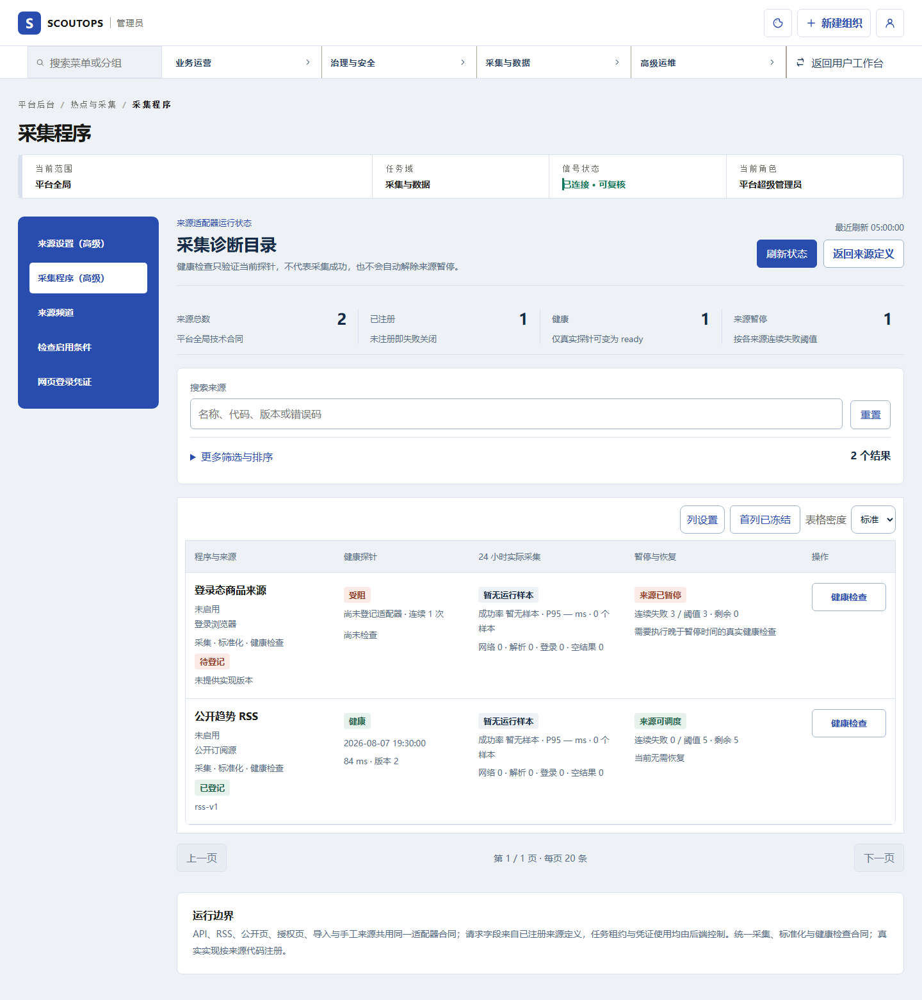
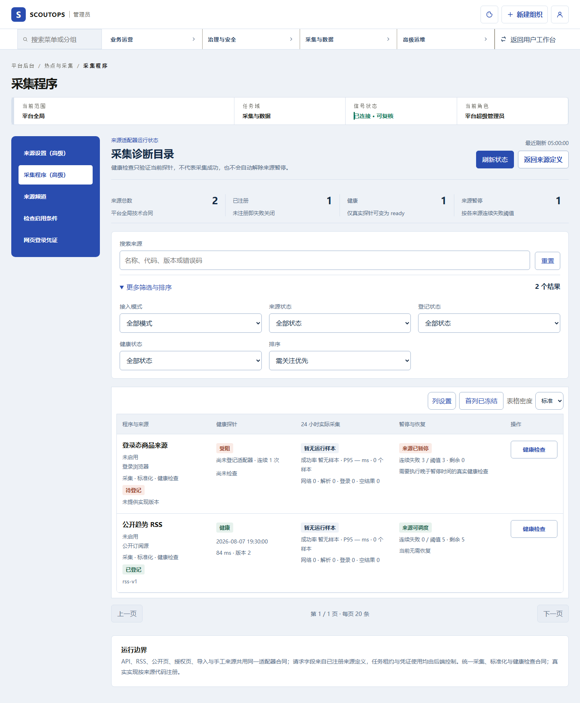

P47 C 整合与交互核对
当前生产源码已整合C页面与详情，不经模板替换或样式注入。图中数据为本地隔离样例，不代表线上部署。
read-success-away · default

read-success-away · filters

read-success-away · returned
read-success-returned · returned

read-failure-away · returned
read-failure-returned · returned

probe-success-away · returned

probe-success-away · reopened-feedback

probe-success-returned · returned

probe-success-returned · reopened-feedback

probe-failure-away · returned

probe-failure-away · reopened-feedback

probe-failure-returned · returned

probe-failure-returned · reopened-feedback

initial-failure-away · initial-error

initial-failure-returned · initial-error

read-success-away · default
read-success-away · filters

read-success-away · default

read-success-away · filters
